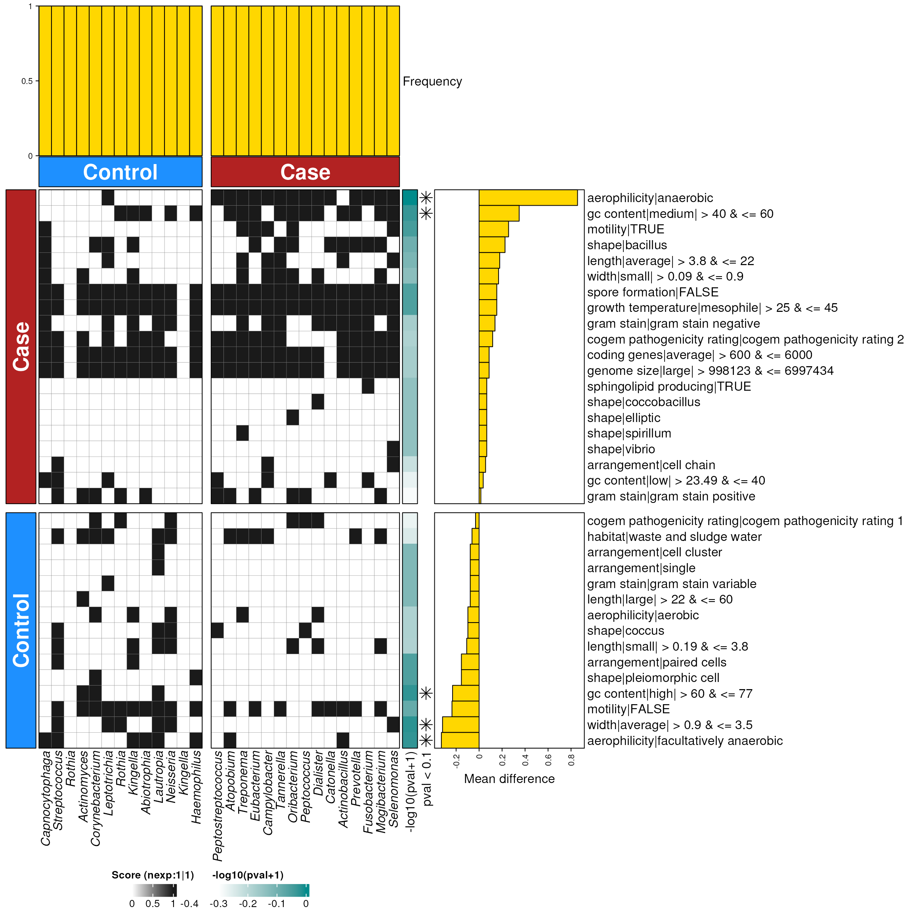
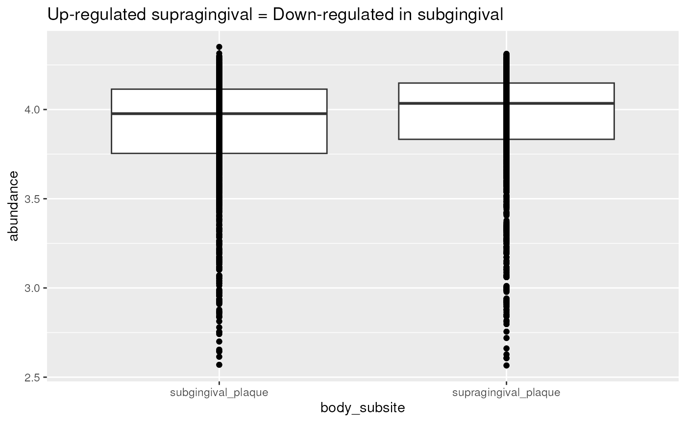

BSEA gingival plaque - MicrobiomeBenchmarkData - 35S
Source:vignettes/articles/subgingival_plaque.Rmd
subgingival_plaque.Rmd
library(bugphyzzAnalyses)
library(MicrobiomeBenchmarkData)
library(bugphyzz)
library(EnrichmentBrowser)
library(mia)
library(dplyr)
library(DT)
library(purrr)
library(tibble)
library(tidyr)
library(ggplot2)Data
dat_name <- 'HMP_2012_16S_gingival_V35'
tse <- getBenchmarkData(dat_name, dryrun = FALSE)[[1]]
tse_genus <- splitByRanks(tse)$genus
## Filter taxa with at least 1 count as abundance in at least 20% of samples
min_n_samples <- round(ncol(tse_genus) * 0.2)
tse_subset <- tse_genus[rowSums(assay(tse_genus) >= 1) >= min_n_samples,]
tse_subset
#> class: TreeSummarizedExperiment
#> dim: 37 311
#> metadata(1): agglomerated_by_rank
#> assays(1): counts
#> rownames(37): Streptococcus Neisseria ... Mogibacterium Peptococcus
#> rowData names(7): superkingdom phylum ... genus taxon_annotation
#> colnames(311): 700103497 700106940 ... 700111586 700109119
#> colData names(15): dataset subject_id ... sequencing_method
#> variable_region_16s
#> reducedDimNames(0):
#> mainExpName: NULL
#> altExpNames(0):
#> rowLinks: a LinkDataFrame (37 rows)
#> rowTree: 1 phylo tree(s) (45364 leaves)
#> colLinks: NULL
#> colTree: NULLNumber of samples per condition
table(tse_subset$body_subsite)
#>
#> subgingival_plaque supragingival_plaque
#> 152 159bugphyzz signatures
Signatures at the genus level:
## importBugphyzz() keeps imputed (ASR) annotations with MCC >= 0.7
## (discrete) or R2 >= 0.5 (numeric) by default, the manuscript thresholds;
## since bugphyzzExports 2026-11 the exported files are already filtered.
bp <- importBugphyzz(version = params$bugphyzz_version) |>
map(~ mutate(.x, NCBI_ID = as.character(NCBI_ID)))
aer <- bp$aerophilicity
gn_sigs <- makeSignatures(
dat = aer, taxIdType = 'Taxon_name', taxLevel = 'genus'
)
## Only one genus is missing (TG5), which is ambiguous in the ncbi taxonomy
mean(as.integer(
rownames(tse_subset) %in% unique(unlist(gn_sigs, use.names = FALSE ))
))
#> [1] 0.972973Without ASR some annotations are missing:
gn_sigs_noasr <- makeSignatures(
dat = aer, taxIdType = 'Taxon_name', taxLevel = 'genus',
evidence = c("exp", "igc", "tas", "nas", "tax")
)
mean(as.integer(
rownames(tse_subset) %in% unique(unlist(gn_sigs_noasr, use.names = FALSE))
))
#> [1] 0.8378378Enrichment (GSEA)
-
*significant (Pvalue < 0.05) -
+enriched in supragingival plaque -
-enriched in subgingival plaque
gsea <- sbea(
method = 'gsea', se = edger, gs = gn_sigs, perm = 1000,
alpha = 0.1 # This is for DA taxa
)
gsea_tbl <- as.data.frame(gsea$res.tbl) |>
mutate(
GENE.SET = ifelse(PVAL < 0.05, paste0(GENE.SET, ' *'), GENE.SET),
PVAL = round(PVAL, 3),
) |>
rename(BUG.SET = GENE.SET)
myDataTable(gsea_tbl)Enrichment (GSEA) no asr
Even without ASR annotations, the enrichment results are still the same.
gsea <- sbea(
method = 'gsea', se = edger, gs = gn_sigs_noasr, perm = 1000,
alpha = 0.1 # This is for DA taxa
)
gsea_tbl <- as.data.frame(gsea$res.tbl) |>
mutate(
GENE.SET = ifelse(PVAL < 0.05, paste0(GENE.SET, ' *'), GENE.SET),
PVAL = round(PVAL, 3),
) |>
rename(BUG.SET = GENE.SET)
myDataTable(gsea_tbl)Enrichment (ORA)
Combine into a single table:
edger_up <- edger
gn_sigs_bk <- c(gn_sigs, list(background = rownames(edger)))
## Ora is performed by comparing the significant group (p.adjust < 0.1)
## against the background. The background should include all of the
## taxa in the experiment. That's why I assigned an adjusted p-value of
## 1 to all taxa with a negative FC in the code below.
rowData(edger_up)$ADJ.PVAL <- ifelse(
rowData(edger_up)$FC < 0, 1, rowData(edger_up)$ADJ.PVAL
)
ora_up <- sbea(
method = 'ora', se = edger_up, gs = gn_sigs_bk, perm = 0,
alpha = 0.1 # This is for DA taxa
)
ora_up_df <- as.data.frame(ora_up$res.tbl)
ora_up_df$BODY.SITE <- 'Supragingival plaque'
edger_down <- edger
rowData(edger_down)$ADJ.PVAL <- ifelse(
rowData(edger_down)$FC > 0, 1, rowData(edger_down)$ADJ.PVAL
)
ora_down <- sbea(
method = 'ora', se = edger_down, gs = gn_sigs_bk, perm = 0,
alpha = 0.1,
)
ora_down_df <- data.frame(ora_down$res.tbl)
ora_down_df$BODY.SITE <- 'Subgingival plaque'
ora <- bind_rows(ora_up_df, ora_down_df) |>
arrange(BODY.SITE, PVAL) |>
relocate(BODY.SITE) |>
mutate(
GENE.SET = ifelse(PVAL < 0.05, paste0(GENE.SET, ' *'), GENE.SET),
PVAL = round(PVAL, 3),
) |>
dplyr::rename(
BUG.SET = GENE.SET, NR.BUGS = NR.GENES, NR.SIG.BUGS = NR.SIG.GENES
) |>
filter(BUG.SET != "background")
myDataTable(ora)ORA - NO ASR
gn_sigs_noasr_bk <- c(gn_sigs_noasr, list(background = rownames(edger)))
ora_up_noasr <- sbea(
method = 'ora', se = edger_up, gs = gn_sigs_noasr_bk, perm = 0,
alpha = 0.1 # This is for DA taxa
)
ora_up_df_noasr <- as.data.frame(ora_up_noasr$res.tbl)
ora_up_df_noasr$BODY.SITE <- 'Supragingival plaque'
ora_down_noasr <- sbea(
method = 'ora', se = edger_down, gs = gn_sigs_noasr_bk, perm = 0,
alpha = 0.1 # This is for DA taxa
)
ora_down_df_noasr <- data.frame(ora_down_noasr$res.tbl)
ora_down_df_noasr$BODY.SITE <- 'Subgingival plaque'
ora_noasr <- bind_rows(ora_up_df_noasr, ora_down_df_noasr) |>
arrange(BODY.SITE, PVAL) |>
relocate(BODY.SITE) |>
mutate(
GENE.SET = ifelse(PVAL < 0.05, paste0(GENE.SET, ' *'), GENE.SET),
PVAL = round(PVAL, 3),
) |>
dplyr::rename(
BUG.SET = GENE.SET, NR.BUGS = NR.GENES, NR.SIG.BUGS = NR.SIG.GENES
) |>
filter(BUG.SET != "background")
myDataTable(ora_noasr)dbBact approach
bpSigs_g <- map(
bp, ~ {
makeSignatures(.x, taxIdType = "NCBI_ID", taxLevel = "genus")
}) |>
list_flatten(name_spec = "{inner}") |>
discard(is.null)
# bpSigs_g <- bpSigs_g[grep("aerophilicity", names(bpSigs_g))]
con <- rownames(edger)[which(rowData(edger)$FC > 0 & rowData(edger)$ADJ.PVAL < 0.1)]
con <- taxizedb::name2taxid(con, db = "ncbi", out_type = "summary")
con <- con$id[con$id != "508215"]
attr(con, "nexp") <- 1
cas <- rownames(edger)[which(rowData(edger)$FC < 0 & rowData(edger)$ADJ.PVAL < 0.1)]
cas <- cas[which(cas != "TG5")]
cas <- taxizedb::name2taxid(cas, db = "ncbi")
attr(cas, "nexp") <- 1
se <- dbEn2(con, cas, bpSigs_g)
dbHt(se)
se |>
rowData() |>
as.data.frame() |>
tibble::rownames_to_column(var = "bp_sig") |>
as_tibble() |>
arrange(P_value) |>
myDataTable()Quick checks
Abundance of taxa in the ‘down-regulated’ set:
## Couldn't make tidySummarizedExperiment work.
## Update code later.
counts1 <- assay(edger_down, 'counts')
counts1 <- log2(counts1 + 1)
counts1 <- counts1 |>
as.data.frame() |>
rownames_to_column(var = 'taxname') |>
pivot_longer(
cols = 2:last_col(), names_to = 'sample', values_to = 'abundance'
)
row_data1 <- edger_down |>
rowData() |>
as.data.frame() |>
rownames_to_column(var = 'taxname') |>
as_tibble()
col_data1 <- edger_down |>
colData() |>
as.data.frame() |>
rownames_to_column(var = 'sample') |>
as_tibble()
data1 <- left_join(counts1, row_data1, by = 'taxname') |>
left_join(col_data1, by = 'sample')
p1 <- data1 |>
filter(ADJ.PVAL < 0.1) |>
ggplot(aes(body_subsite, abundance)) +
labs(
title = 'Down-regulated supragingival = Up-regulated in subgingival'
) +
geom_boxplot() +
geom_point()
p1
Abundance of taxa in the ‘up-regulated’ set:
## Couldn't make tidySummarizedExperiment work.
## Update code later.
counts2 <- assay(edger_up, 'counts')
counts2 <- log2(counts2 + 1)
counts2 <- counts2 |>
as.data.frame() |>
rownames_to_column(var = 'taxname') |>
pivot_longer(
cols = 2:last_col(), names_to = 'sample', values_to = 'abundance'
)
row_data2 <- edger_up |>
rowData() |>
as.data.frame() |>
rownames_to_column(var = 'taxname') |>
as_tibble()
col_data2 <- edger_up |>
colData() |>
as.data.frame() |>
rownames_to_column(var = 'sample') |>
as_tibble()
data2 <- left_join(counts2, row_data2, by = 'taxname') |>
left_join(col_data2, by = 'sample')
p2 <- data2 |>
filter(ADJ.PVAL < 0.1) |>
ggplot(aes(body_subsite, abundance)) +
labs(
title = 'Up-regulated supragingival = Down-regulated in subgingival'
) +
geom_boxplot() +
geom_point()
p2
Session information
sessioninfo::session_info()
#> ─ Session info ───────────────────────────────────────────────────────────────
#> setting value
#> version R version 4.4.1 (2024-06-14)
#> os Ubuntu 22.04.4 LTS
#> system x86_64, linux-gnu
#> ui X11
#> language en
#> collate en_US.UTF-8
#> ctype en_US.UTF-8
#> tz Etc/UTC
#> date 2026-11-11
#> pandoc 3.2 @ /usr/bin/ (via rmarkdown)
#> quarto 1.4.555 @ /usr/local/bin/quarto
#>
#> ─ Packages ───────────────────────────────────────────────────────────────────
#> package * version date (UTC) lib source
#> abind 1.4-8 2024-09-12 [1] RSPM (R 4.4.0)
#> annotate 1.82.0 2024-04-30 [1] Bioconductor 3.19 (R 4.4.1)
#> AnnotationDbi 1.66.0 2024-05-01 [1] Bioconductor 3.19 (R 4.4.1)
#> ape 5.8-1 2024-12-16 [1] RSPM (R 4.4.0)
#> beachmat 2.20.0 2024-04-30 [1] Bioconductor 3.19 (R 4.4.1)
#> beeswarm 0.4.0 2021-06-01 [1] RSPM (R 4.4.0)
#> Biobase * 2.64.0 2024-04-30 [1] Bioconductor 3.19 (R 4.4.1)
#> BiocFileCache 2.12.0 2024-04-30 [1] Bioconductor 3.19 (R 4.4.1)
#> BiocGenerics * 0.50.0 2024-04-30 [1] Bioconductor 3.19 (R 4.4.1)
#> BiocNeighbors 1.22.0 2024-04-30 [1] Bioconductor 3.19 (R 4.4.1)
#> BiocParallel 1.38.0 2024-04-30 [1] Bioconductor 3.19 (R 4.4.1)
#> BiocSingular 1.20.0 2024-04-30 [1] Bioconductor 3.19 (R 4.4.1)
#> Biostrings * 2.72.1 2024-06-02 [1] Bioconductor 3.19 (R 4.4.1)
#> bit 4.6.0 2025-03-06 [1] RSPM (R 4.4.0)
#> bit64 4.8.6 2026-09-01 [1] RSPM (R 4.4.0)
#> bitops 1.1-0 2026-07-30 [1] RSPM (R 4.4.0)
#> blob 1.3.0 2026-01-14 [1] RSPM (R 4.4.0)
#> bluster 1.14.0 2024-04-30 [1] Bioconductor 3.19 (R 4.4.1)
#> bslib 0.12.0 2026-08-04 [1] RSPM (R 4.4.0)
#> bugphyzz * 1.7.17 2026-11-11 [1] Github (waldronlab/bugphyzz@d7e7f9a)
#> bugphyzzAnalyses * 0.1.19 2026-11-11 [1] local
#> cachem 1.1.0 2024-05-16 [1] RSPM (R 4.4.0)
#> Cairo 1.7-0 2025-10-29 [1] RSPM (R 4.4.0)
#> circlize 0.4.18 2026-04-04 [1] RSPM (R 4.4.0)
#> cli 3.6.6 2026-04-09 [1] RSPM (R 4.4.0)
#> clue 0.3-68 2026-03-26 [1] RSPM (R 4.4.0)
#> cluster 2.1.6 2023-12-01 [2] CRAN (R 4.4.1)
#> codetools 0.2-20 2024-03-31 [2] CRAN (R 4.4.1)
#> colorspace 2.1-4 2026-10-08 [1] RSPM (R 4.4.0)
#> ComplexHeatmap 2.20.0 2024-04-30 [1] Bioconductor 3.19 (R 4.4.1)
#> crayon 1.5.3 2024-06-20 [1] RSPM (R 4.4.0)
#> crosstalk 1.2.2 2025-08-26 [1] RSPM (R 4.4.0)
#> curl 8.1.0 2026-10-14 [1] RSPM (R 4.4.0)
#> DBI 1.3.0 2026-02-25 [1] RSPM (R 4.4.0)
#> dbplyr 2.6.0 2026-06-17 [1] RSPM (R 4.4.0)
#> DECIPHER 3.0.0 2024-04-30 [1] Bioconductor 3.19 (R 4.4.1)
#> decontam 1.24.0 2024-04-30 [1] Bioconductor 3.19 (R 4.4.1)
#> DelayedArray 0.30.1 2024-05-07 [1] Bioconductor 3.19 (R 4.4.1)
#> DelayedMatrixStats 1.26.0 2024-04-30 [1] Bioconductor 3.19 (R 4.4.1)
#> desc 1.4.3 2023-12-10 [1] RSPM (R 4.4.0)
#> digest 0.6.39 2025-11-19 [1] RSPM (R 4.4.0)
#> DirichletMultinomial 1.46.0 2024-04-30 [1] Bioconductor 3.19 (R 4.4.1)
#> doParallel 1.0.17 2022-02-07 [1] RSPM (R 4.4.0)
#> dplyr * 1.2.1 2026-04-03 [1] RSPM (R 4.4.0)
#> DT * 0.34.0 2025-09-02 [1] RSPM (R 4.4.0)
#> edgeR 4.2.2 2024-10-13 [1] Bioconductor 3.19 (R 4.4.1)
#> EnrichmentBrowser * 2.34.1 2024-05-06 [1] Bioconductor 3.19 (R 4.4.1)
#> evaluate 1.0.5 2025-08-27 [1] RSPM (R 4.4.0)
#> farver 2.1.2 2024-05-13 [1] RSPM (R 4.4.0)
#> fastmap 1.2.0 2024-05-15 [1] RSPM (R 4.4.0)
#> filelock 1.0.3 2023-12-11 [1] RSPM (R 4.4.0)
#> foreach 1.5.2 2022-02-02 [1] RSPM (R 4.4.0)
#> fs 2.1.0 2026-04-18 [1] RSPM (R 4.4.0)
#> generics 0.1.4 2025-05-09 [1] RSPM (R 4.4.0)
#> GenomeInfoDb * 1.40.1 2024-05-24 [1] Bioconductor 3.19 (R 4.4.1)
#> GenomeInfoDbData 1.2.12 2024-10-27 [1] Bioconductor
#> GenomicRanges * 1.56.2 2024-10-09 [1] Bioconductor 3.19 (R 4.4.1)
#> GetoptLong 1.1.1 2026-04-08 [1] RSPM (R 4.4.0)
#> ggbeeswarm 0.7.3 2025-11-29 [1] RSPM (R 4.4.0)
#> ggplot2 * 4.0.3 2026-04-22 [1] RSPM (R 4.4.0)
#> ggrepel 0.9.8 2026-03-17 [1] RSPM (R 4.4.0)
#> GlobalOptions 0.1.4 2026-04-08 [1] RSPM (R 4.4.0)
#> glue 1.8.1 2026-04-17 [1] RSPM (R 4.4.0)
#> graph * 1.82.0 2024-04-30 [1] Bioconductor 3.19 (R 4.4.1)
#> gridExtra 2.3.1 2026-06-25 [1] RSPM (R 4.4.0)
#> GSEABase 1.66.0 2024-04-30 [1] Bioconductor 3.19 (R 4.4.1)
#> gtable 0.3.6 2024-10-25 [1] RSPM (R 4.4.0)
#> hoardr 0.5.5 2025-01-18 [1] RSPM (R 4.4.0)
#> htmltools 0.5.9 2025-12-04 [1] RSPM (R 4.4.0)
#> htmlwidgets 1.6.4 2023-12-06 [1] RSPM (R 4.4.0)
#> httr 1.4.9 2026-09-01 [1] RSPM (R 4.4.0)
#> httr2 1.3.0 2026-07-13 [1] RSPM (R 4.4.0)
#> igraph 2.3.4 2026-09-30 [1] RSPM (R 4.4.0)
#> IRanges * 2.38.1 2024-07-03 [1] Bioconductor 3.19 (R 4.4.1)
#> irlba 2.4.1 2026-10-05 [1] RSPM (R 4.4.0)
#> iterators 1.0.14 2022-02-05 [1] RSPM (R 4.4.0)
#> jquerylib 0.1.4 2021-04-26 [1] RSPM (R 4.4.0)
#> jsonlite 2.0.0 2025-03-27 [1] RSPM (R 4.4.0)
#> KEGGgraph 1.64.0 2024-04-30 [1] Bioconductor 3.19 (R 4.4.1)
#> KEGGREST 1.44.1 2024-06-19 [1] Bioconductor 3.19 (R 4.4.1)
#> knitr 1.52 2026-09-06 [1] RSPM (R 4.4.0)
#> labeling 0.4.3 2023-08-29 [1] RSPM (R 4.4.0)
#> lattice 0.22-6 2024-03-20 [2] CRAN (R 4.4.1)
#> lazyeval 0.2.3 2026-04-04 [1] RSPM (R 4.4.0)
#> lifecycle 1.0.5 2026-01-08 [1] RSPM (R 4.4.0)
#> limma 3.60.6 2024-10-02 [1] Bioconductor 3.19 (R 4.4.1)
#> locfit 1.5-9.12 2025-03-05 [1] RSPM (R 4.4.0)
#> magick 2.9.1 2026-02-28 [1] RSPM (R 4.4.0)
#> magrittr 2.0.5 2026-04-04 [1] RSPM (R 4.4.0)
#> MASS 7.3-61 2024-06-13 [2] RSPM (R 4.4.0)
#> Matrix 1.7-0 2024-04-26 [2] CRAN (R 4.4.1)
#> MatrixGenerics * 1.16.0 2024-04-30 [1] Bioconductor 3.19 (R 4.4.1)
#> matrixStats * 1.5.0 2025-01-07 [1] RSPM (R 4.4.0)
#> memoise 2.0.1 2021-11-26 [1] RSPM (R 4.4.0)
#> mgcv 1.9-1 2023-12-21 [2] CRAN (R 4.4.1)
#> mia * 1.12.0 2024-04-30 [1] Bioconductor 3.19 (R 4.4.1)
#> MicrobiomeBenchmarkData * 1.15.2 2026-11-11 [1] Github (waldronlab/MicrobiomeBenchmarkData@6b59c73)
#> MultiAssayExperiment * 1.30.3 2024-07-10 [1] Bioconductor 3.19 (R 4.4.1)
#> nlme 3.1-165 2024-06-06 [2] RSPM (R 4.4.0)
#> otel 0.3.0 2026-11-07 [1] RSPM (R 4.4.0)
#> permute 0.10-0 2026-11-06 [1] RSPM (R 4.4.0)
#> pillar 1.11.1 2025-09-17 [1] RSPM (R 4.4.0)
#> pkgconfig 2.0.3 2019-09-22 [1] RSPM (R 4.4.0)
#> pkgdown 2.2.1 2026-07-07 [1] RSPM (R 4.4.0)
#> plyr 1.8.9 2023-10-02 [1] RSPM (R 4.4.0)
#> png 0.1-9 2026-03-15 [1] RSPM (R 4.4.0)
#> purrr * 1.2.2 2026-04-10 [1] RSPM (R 4.4.0)
#> R6 2.6.1 2025-02-15 [1] RSPM (R 4.4.0)
#> ragg 1.5.2 2026-03-23 [1] RSPM (R 4.4.0)
#> rappdirs 0.3.4 2026-01-17 [1] RSPM (R 4.4.0)
#> RColorBrewer 1.1-3 2022-04-03 [1] RSPM (R 4.4.0)
#> Rcpp 1.1.2 2026-07-05 [1] RSPM (R 4.4.0)
#> RCurl 1.98-1.20 2026-08-21 [1] RSPM (R 4.4.0)
#> reshape2 1.4.5 2025-11-12 [1] RSPM (R 4.4.0)
#> Rgraphviz 2.48.0 2024-04-30 [1] Bioconductor 3.19 (R 4.4.1)
#> rjson 0.2.23 2024-09-16 [1] RSPM (R 4.4.0)
#> rlang 1.3.0 2026-07-05 [1] RSPM (R 4.4.0)
#> rmarkdown 2.32 2026-09-01 [1] RSPM (R 4.4.0)
#> RSQLite 3.53.3 2026-06-30 [1] RSPM (R 4.4.0)
#> rsvd 2.0.0 2026-11-02 [1] RSPM (R 4.4.0)
#> S4Arrays 1.4.1 2024-05-20 [1] Bioconductor 3.19 (R 4.4.1)
#> S4Vectors * 0.42.1 2024-07-03 [1] Bioconductor 3.19 (R 4.4.1)
#> S7 0.2.2 2026-04-22 [1] RSPM (R 4.4.0)
#> safe 3.44.0 2024-04-30 [1] Bioconductor 3.19 (R 4.4.1)
#> sass 0.4.10 2025-04-11 [1] RSPM (R 4.4.0)
#> ScaledMatrix 1.12.0 2024-04-30 [1] Bioconductor 3.19 (R 4.4.1)
#> scales 1.4.0 2025-04-24 [1] RSPM (R 4.4.0)
#> scater 1.32.1 2024-07-21 [1] Bioconductor 3.19 (R 4.4.1)
#> scuttle 1.14.0 2024-04-30 [1] Bioconductor 3.19 (R 4.4.1)
#> sessioninfo 1.2.4 2026-06-04 [1] RSPM (R 4.4.0)
#> shape 1.4.6.1 2024-02-23 [1] RSPM (R 4.4.0)
#> SingleCellExperiment * 1.26.0 2024-04-30 [1] Bioconductor 3.19 (R 4.4.1)
#> SparseArray 1.4.8 2024-05-24 [1] Bioconductor 3.19 (R 4.4.1)
#> SparseM 1.84-2 2024-07-17 [1] RSPM (R 4.4.0)
#> sparseMatrixStats 1.16.0 2024-04-30 [1] Bioconductor 3.19 (R 4.4.1)
#> statmod 1.5.2 2026-05-17 [1] RSPM (R 4.4.0)
#> stringi 1.8.9 2026-08-04 [1] RSPM (R 4.4.0)
#> stringr 1.6.0 2025-11-04 [1] RSPM (R 4.4.0)
#> SummarizedExperiment * 1.34.0 2024-05-01 [1] Bioconductor 3.19 (R 4.4.1)
#> systemfonts 1.3.2 2026-03-05 [1] RSPM (R 4.4.0)
#> taxizedb 0.3.2 2025-06-18 [1] RSPM (R 4.4.0)
#> textshaping 1.0.5 2026-03-06 [1] RSPM (R 4.4.0)
#> tibble * 3.3.1 2026-01-11 [1] RSPM (R 4.4.0)
#> tidyr * 1.3.2 2025-12-19 [1] RSPM (R 4.4.0)
#> tidyselect 1.2.1 2024-03-11 [1] RSPM (R 4.4.0)
#> tidytree 0.4.8 2026-07-02 [1] RSPM (R 4.4.0)
#> treeio 1.28.0 2024-04-30 [1] Bioconductor 3.19 (R 4.4.1)
#> TreeSummarizedExperiment * 2.12.0 2024-04-30 [1] Bioconductor 3.19 (R 4.4.1)
#> UCSC.utils 1.0.0 2024-04-30 [1] Bioconductor 3.19 (R 4.4.1)
#> vctrs 0.7.3 2026-04-11 [1] RSPM (R 4.4.0)
#> vegan 2.7-6 2026-08-31 [1] RSPM (R 4.4.0)
#> vipor 0.4.7 2023-12-18 [1] RSPM (R 4.4.0)
#> viridis 0.6.5 2024-01-29 [1] RSPM (R 4.4.0)
#> viridisLite 0.4.3 2026-02-04 [1] RSPM (R 4.4.0)
#> withr 3.0.3 2026-06-19 [1] RSPM (R 4.4.0)
#> xfun 0.62 2026-10-16 [1] RSPM (R 4.4.0)
#> XML 3.99-0.25 2026-09-27 [1] RSPM (R 4.4.0)
#> xtable 1.8-8 2026-02-22 [1] RSPM (R 4.4.0)
#> XVector * 0.44.0 2024-04-30 [1] Bioconductor 3.19 (R 4.4.1)
#> yaml 2.3.12 2025-12-10 [1] RSPM (R 4.4.0)
#> yulab.utils 0.2.5 2026-08-29 [1] RSPM (R 4.4.0)
#> zlibbioc 1.50.0 2024-04-30 [1] Bioconductor 3.19 (R 4.4.1)
#>
#> [1] /usr/local/lib/R/site-library
#> [2] /usr/local/lib/R/library
#> * ── Packages attached to the search path.
#>
#> ──────────────────────────────────────────────────────────────────────────────